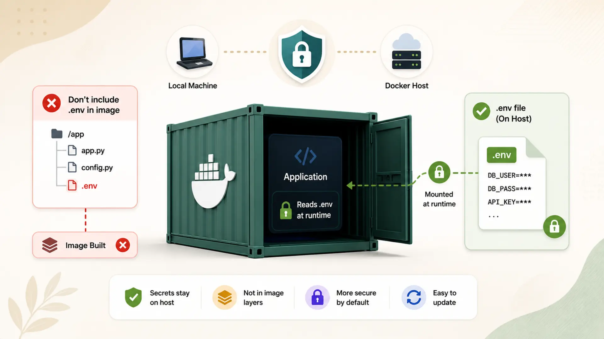

Protect Sensitive Information in Docker: Accessing .env Credentials Without Exposing Them

Managing sensitive information like API keys and credentials is crucial in modern application development. While Docker simplifies containerization, mishandling .env files can expose secrets and compromise security. This blog will guide you through securely managing .env files in Docker, preventing them from being embedded in images, and dynamically injecting credentials at runtime. By following these steps, you'll ensure your applications remain secure and production-ready.
📚 Table of Contents
1. Introduction
When building modern applications, managing sensitive information such as API keys, tokens, and database credentials is a critical aspect of development. Developers often store these credentials in .env files for simplicity, but improper handling of these files in Dockerized environments can lead to severe security risks.
Including .env files in Docker images may expose sensitive data through shared images or repositories, increasing the likelihood of accidental leaks. Additionally, this practice violates the best principles of secrets management, which emphasize separating application code from credentials.
To address this, we'll explore how to securely pass .env files to Docker containers without embedding them in the image. This method ensures that sensitive credentials remain external to the Docker image, protecting them from unauthorized access while maintaining flexibility for updates.
In this blog, we'll cover:
- Why embedding .env files in Docker images is a bad idea.
- A step-by-step guide to securely accessing .env credentials at runtime.
- Practical code examples to demonstrate the process.
- Common pitfalls to avoid and tips for enhancing security.
By the end, you'll have a clear understanding of how to manage sensitive data in Docker containers without compromising security.
2. Why Excluding .env Files from Docker Images is Crucial
When managing sensitive information such as API keys, database credentials, or tokens in applications, storing them in .env files is a common practice. However, including .env files in Docker images can lead to severe security risks, compromising your application's sensitive data. Let's explore why excluding .env files from Docker images is essential.
Security Risks of Including .env Files
Here is summary of possible security risks of including .env file in docker image.
⚠️ Embedding .env files in Docker images makes your secrets part of the image layers. These layers can be inspected with docker history or extracted with docker save, exposing credentials to anyone with access to the image — even after the file is removed.
- Accidental Exposure in Shared Images
- Persistent Secrets in Image Layers
Docker images are often pushed to repositories like Docker Hub or shared within teams. If .env files are included in the image, their sensitive contents become part of the image layers. These layers can be inspected using tools like docker history or extracted with docker save, making secrets accessible to anyone with access to the image.
For instance:
The command might expose a layer that reveals:
Once a .env file is embedded in an image, it becomes a part of the image history. Even if you later remove or replace it, the older layers will still contain the sensitive data unless you rebuild the image from scratch. This creates long-term security risks.
Violates Security Best Practices
Modern security standards recommend separating sensitive credentials from application code. Including .env files in Docker images contradicts this principle and introduces several challenges:
- Static Secrets: Secrets embedded into images become static. To update a credential, you need to rebuild and redeploy the image, which is time-consuming and inefficient.
- Environment-Specific Configurations: Embedding .env files in the image ties the container to a specific environment, making it harder to manage different credentials for development, staging, and production.
Practical Docker Example
Here's a practical scenario illustrating why including .env files is risky:
Dockerfile (Bad Practice):
.env File:
Building and pushing this image embeds the .env file into the image layers. Anyone with access to the image can inspect it:
Output:
Best Practices: Exclude .env Files
To prevent these risks, you should always exclude .env files from Docker images using a .dockerignore file:
.dockerignore:
Improved Dockerfile:
💡 Now the .env file remains external and is not part of the image. You can inject its values dynamically at runtime using docker-compose or the --env-file flag, ensuring secrets are handled securely.
3. Approach
In this section, we'll explore how to securely manage .env files with Docker by following a step-by-step procedure. We will cover two approaches:
- Using only a Dockerfile with the --env-file option
- Using docker-compose to simplify handling environment variables.
Both approaches ensure sensitive credentials in .env files are passed to the container at runtime, without embedding them in the Docker image.
Approach 1: Using Only Dockerfile with --env-file
🔹 Step 1: Prepare Application
Create a simple Python script (main.py) that reads and prints environment variables.
main.py
This script uses os.getenv() to fetch the SLACK_BOT_TOKEN and SLACK_SIGNING_SECRET environment variables.
🔹 Step 2: Create a Secure .env File
In the same directory where main.py exists, create a .env file with the following content:
.env file
🔹 Step 3: Create a Minimal Dockerfile
Create a requirements.txt file in the same directory where main.py exists. It contains list of python libraries which needs to be installed while creating docker image. For example, python-dotenv. Here's a simple Dockerfile that excludes the .env file:
Dockerfile
🔹 Step 4: Exclude .env with .dockerignore
Create a .dockerignore file to ensure the .env file is not included in the image:
.dockerignore file
This prevents .env from being copied into the Docker image during the COPY step in the Dockerfile.
🔹 Step 5: Build the Docker Image
Build the Docker image:
🔹 Step 6: Run the Container with --env-file
Pass the .env file to the container at runtime using the --env-file option:
Expected Output:
Approach 2: Using Docker Compose
If you prefer a simpler system to manage environment variables, you can use docker-compose. This approach eliminates the need to pass --env-file explicitly, as Docker Compose can automatically load .env files.
🔹 Step 1: Prepare Application
Use the same main.py and .env files as in Approach 1.
🔹 Step 2: Create a Dockerfile
Use the same Dockerfile as in Approach 1, ensuring .env is excluded with .dockerignore.
🔹 Step 3: Create a docker-compose.yml File
Create a docker-compose.yml file to define the service and reference the .env file:
docker-compose.yml:
🔹 Step 4: Build and Run the Application
Build the docker image and and run the container using following commands.
Expected Output:
Notes
We can override the .env file by using the --env-file flag when running docker-compose commands. Suppose we want to use a different .env file, such as custom.env. We can pass it like this:
This will instruct Docker Compose to load environment variables from custom.env instead of the default .env.
Best Practices
- Use the --env-file option when you need flexibility in choosing .env files for different environments (e.g., dev.env, prod.env).
- Avoid hardcoding the env_file path in docker-compose.yml for maximum runtime flexibility.
4. Comparison of Docker (--env-file) vs. Docker Compose Approaches
Both Docker (--env-file) and Docker Compose (env_file) provide ways to pass .env files at runtime while keeping them out of the Docker image. However, they have distinct advantages depending on your use case. Below is a detailed comparison based on key benefits:
| Feature | Docker (--env-file) | Docker Compose (env_file) |
|---|---|---|
| Ease of Use | Requires manually specifying --env-file when running the container. | Automatically loads .env file when running docker-compose up. |
| Multiple Services Support | Best suited for single-container applications. | Ideal for multi-container applications where multiple services share environment variables. |
| Explicit Control | Each docker run command explicitly specifies the .env file, avoiding unintended overrides. | Variables are implicitly loaded from .env, which may cause conflicts if multiple .env files exist. |
| Runtime Flexibility | Allows dynamic selection of .env files using --env-file /path/to/env. | Requires modifying docker-compose.yml to change the .env file path (unless overridden with --env-file). |
| File Location | The .env file can be located anywhere and explicitly passed at runtime. | The .env file must be in the location specified in docker-compose.yml or the default project directory. |
📌 When to use Docker (--env-file) approach?
- You have a single-container application.
- You need explicit control over environment variable injection.
- You want the flexibility to dynamically specify different .env files at runtime.
- You prefer a minimal setup without additional YAML configuration.
📌 When to use Docker Compose (env-file) approach?
- You have multiple services (e.g., web app, database, cache) that need shared environment variables.
- You want automatic networking and container orchestration.
- You don't want to manually specify the .env file path every time you start a container.
- You need a simplified deployment and scaling process for development environments.
5. Conclusion
Managing sensitive information securely in Dockerized environments is crucial for preventing credential leaks and maintaining best security practices. Including .env files in Docker images can expose sensitive data, making it vulnerable to unauthorized access. Instead, a better approach is to keep secrets external and inject them dynamically at runtime.
We explored two secure ways to handle .env files:
- Using --env-file with Docker: This approach offers explicit control and flexibility, allowing you to pass different .env files dynamically at runtime.
- Using env-file with Docker Compose: This simplifies environment management for multi-container applications, ensuring secrets are loaded automatically without manual configuration.
Both methods ensure that .env files remain outside the Docker image while providing a secure way to access credentials inside containers. Choosing the right approach depends on your project's needs. Docker's --env-file is great for single-container setups, while Docker Compose is ideal for multi-service applications.
By following these best practices, you can safeguard sensitive credentials while maintaining flexibility, scalability, and security in your Docker deployments.

Technical Stacks
 Docker
Docker Python
Python
References
-
Docker Docs:
Set environment variables in Docker Compose
- Stack Overflow: Using env-file with docker-compose
- Qiita: https://qiita.com/SolKul/items/989727aeeafcae28ecf7